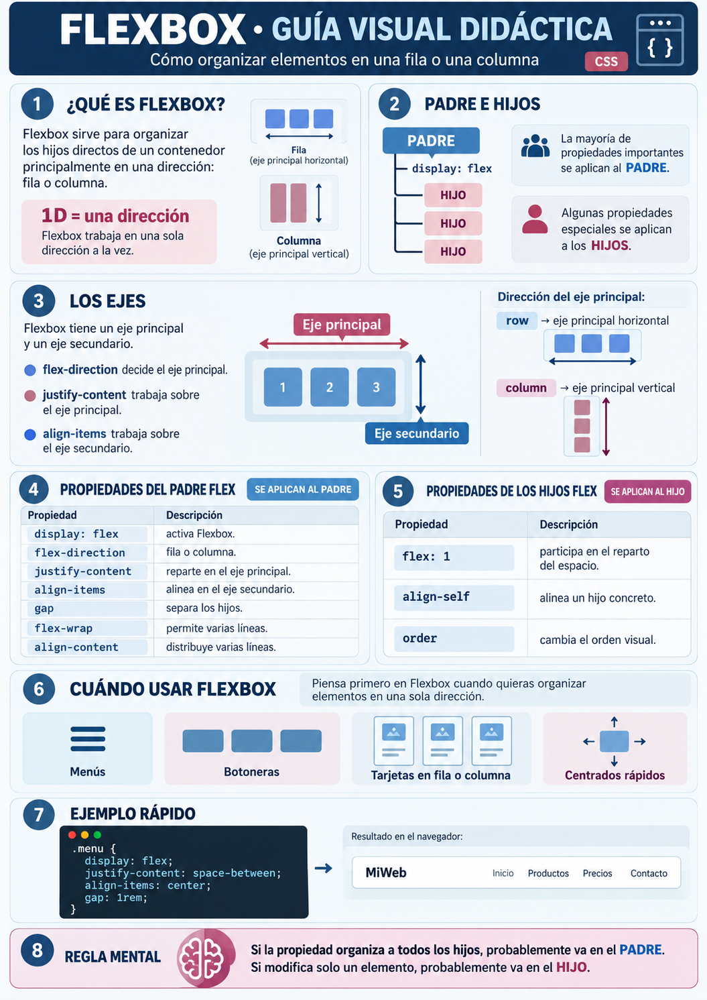

display: flex.
1 · EL MAPA MENTAL
Primero decide qué problema estás resolviendo
Una regla útil para empezar: Flexbox organiza principalmente en una dirección; Grid organiza filas y columnas. No significa que Grid sea siempre “grande” y Flex siempre “pequeño”: ambos pueden usarse en componentes de cualquier tamaño.
display: grid.
Idea clave: antes de tocar propiedades, identifica el contenedor que organiza a los demás.
La mayoría de las decisiones de Flexbox y Grid empiezan en ese PADRE.
2 · LA IDEA MÁS IMPORTANTE
PADRE e HIJOS: quién recibe cada propiedad
PADRE: recibe
display: flex o display: grid y, normalmente,
las propiedades que organizan al conjunto.
HIJO: recibe propiedades especiales cuando queremos modificar solo ese elemento
dentro del Flex o del Grid.
PADRE
└── display: flex o display: grid
├── HIJO DIRECTO
├── HIJO DIRECTO
└── HIJO DIRECTO
Solo los hijos directos del contenedor pasan a ser elementos Flex o Grid. Un nieto no recibe automáticamente ese comportamiento.
Muy importante: un elemento puede ser HIJO de un layout y, al mismo tiempo,
convertirse en PADRE de otro layout para organizar su propio contenido.
HEADER → PADRE FLEX
│
├── LOGO → HIJO FLEX
│
└── NAV → HIJO FLEX
│
└── también PADRE FLEX de sus enlaces
3 · FLEXBOX
Flexbox: organiza elementos principalmente en una dirección
Flexbox trabaja con un eje principal y un eje secundario.
flex-direction decide la dirección del eje principal.
HIJO 1
HIJO 2
HIJO 3
Con flex-direction: row, el eje principal es horizontal.
justify-content trabaja sobre ese eje y align-items sobre el eje secundario.
Propiedades principales del contenedor Flex
display: flex— activa Flexbox.flex-direction— decide fila o columna.justify-content— reparte en el eje principal.align-items— alinea en el eje secundario.gap— crea separación entre los hijos.flex-wrap— permite saltar a otra línea si no caben.align-content— distribuye varias líneas Flex en el eje secundario.
Propiedades útiles de los hijos Flex
flex: 1— hace que ese hijo participe en el reparto del espacio.align-self— cambia la alineación de un hijo concreto.order— cambia su orden visual.

Playground de Flexbox
Todos los controles de este playground modifican propiedades del PADRE FLEX.
El código equivalente aparece debajo y puedes llevarlo directamente a tu hoja styles.css.
Define el eje principal: fila, fila invertida o columna.
Distribuye los hijos sobre el eje principal.
Alinea todos los hijos sobre el eje secundario.
Separa los hijos sin tener que poner margen a cada uno.
wrap permite que los elementos bajen a otra línea si no caben.
Solo se aprecia cuando existen varias líneas Flex. Distribuye esas líneas
sobre el eje secundario; no alinea cada elemento individualmente.
Uno
Dos
Tres
Cuatro
Cinco
CSS que estás construyendo
justify-content: ¿por qué cambia de “horizontal” a “vertical”?
Porque no significa horizontal. Significa eje principal. Si cambias
flex-direction: column, el eje principal pasa a ser vertical.
align-items: afecta a todos los hijos
Si quieres cambiar solo uno, usa align-self en ese HIJO.
align-content: no es lo mismo que align-items
align-items alinea los elementos dentro de una línea Flex.
align-content distribuye las líneas completas cuando hay varias.
Por eso normalmente necesita flex-wrap: wrap y suficiente contenido para que aparezcan varias líneas.
nowrap no significa necesariamente “desbordar”
Los elementos Flex intentan caber en la misma línea y, por defecto, pueden encogerse.
Si activas wrap, permites que pasen a una nueva línea cuando no caben.
Ampliación útil: propiedades que conviene reconocer
display: inline-flex
Los hijos se organizan con Flexbox igual que con display: flex,
pero el contenedor participa externamente como una caja en línea.
Es útil reconocerlo, aunque para la mayoría de layouts empezarás con display: flex.
flex-flow
Es un atajo para escribir flex-direction y flex-wrap juntos.
.contenedor {
display: flex;
flex-flow: row wrap;
}
No hace falta memorizar estos atajos ahora.
Lo importante es que, si aparecen en código ajeno, sepas reconocer qué están haciendo.
Ejemplo de propiedad aplicada a un hijo
.menu {
display: flex;
gap: 1rem;
}
.boton-destacado {
align-self: center; /* HIJO concreto */
}4 · CSS GRID
Grid: organiza el espacio en filas y columnas
Grid es bidimensional. El PADRE GRID define la rejilla; los HIJOS GRID pueden colocarse o extenderse dentro de ella.
Propiedades principales del contenedor Grid
display: grid— activa Grid.grid-template-columns— define las columnas.grid-template-rows— define las filas explícitas.gap— separa filas y columnas.
Propiedades útiles de los hijos Grid
grid-column— decide qué columnas ocupa un hijo.grid-row— decide qué filas ocupa un hijo.
¿Qué significa repeat(3, 1fr)?
1fr
1fr
1fr
repeat(3, 1fr) significa: repite 3 veces una columna de
1 fracción del espacio disponible.
Playground de Grid
Los controles principales modifican el PADRE GRID. Además, hay un control específico para observar una propiedad aplicada a un HIJO.
Decide cuántas columnas tiene la rejilla.
Crea espacio uniforme entre celdas.
La opción automática usa
auto-fit y minmax()
para adaptarse al ancho disponible.
Este control modifica solo el primer hijo, no al contenedor.
A
B
C
D
E
F
CSS del PADRE GRID
CSS del HIJO seleccionado
Responsive:
repeat(auto-fit, minmax(200px, 1fr))
permite crear tantas columnas como quepan, manteniendo un ancho mínimo razonable.
5 · FLEX + GRID EN UNA PÁGINA REAL
No compiten: se combinan
DevCampus
HTML
<header class="cabecera">
<div class="logo">DevCampus</div>
<nav class="menu">
<a href="#">Inicio</a>
<a href="#">Cursos</a>
<a href="#">Contacto</a>
</nav>
</header>
<main class="productos">
<article>Curso 1</article>
<article>Curso 2</article>
<article>Curso 3</article>
</main>CSS
.cabecera {
display: flex; /* PADRE FLEX */
justify-content: space-between;
align-items: center;
}
.menu {
display: flex; /* también PADRE FLEX */
gap: 1rem;
}
.productos {
display: grid; /* PADRE GRID */
grid-template-columns: repeat(3, 1fr);
gap: 2rem;
}
Observa el detalle: .menu es hijo Flex de .cabecera,
pero a la vez es padre Flex de sus enlaces.
6 · ANTES DE ESCRIBIR CSS
Diagnóstico rápido
- Identifica cuál es el contenedor padre.
- Identifica cuáles son sus hijos directos.
- Si el problema es principalmente una fila o columna, prueba Flexbox.
- Si necesitas filas y columnas, prueba Grid.
- Si quieres modificar al conjunto, busca una propiedad del PADRE.
- Si quieres modificar solo un elemento, comprueba si necesitas una propiedad del HIJO.
Regla mental: si una propiedad cambia cómo se organizan todos los hijos,
probablemente va en el PADRE. Si cambia solo un elemento concreto, probablemente va en el HIJO.
7 · CHULETA FINAL
Propiedades esenciales: PADRE vs HIJO
Flexbox
| Propiedad | ¿Dónde va? | Opciones principales | Qué resuelve |
|---|---|---|---|
display |
PADRE | flex |
Activa Flexbox. |
flex-direction |
PADRE | row, column, row-reverse, column-reverse |
Decide la dirección del eje principal. |
justify-content |
PADRE | flex-start, center, flex-end, space-between, space-around, space-evenly |
Distribuye los hijos en el eje principal. |
align-items |
PADRE | stretch, flex-start, center, flex-end, baseline |
Alinea los hijos en el eje secundario. |
gap |
PADRE | 1rem, 2rem, 20px… |
Define la separación entre los hijos. |
flex-wrap |
PADRE | nowrap, wrap |
Decide si los hijos pueden pasar a otra línea. |
align-content |
PADRE | stretch, flex-start, center, flex-end, space-between, space-around |
Distribuye varias líneas Flex en el eje secundario. |
flex |
HIJO | 1 |
Permite que el hijo participe en el reparto del espacio. |
align-self |
HIJO | auto, flex-start, center, flex-end, stretch |
Cambia la alineación de un hijo concreto. |
order |
HIJO | 0, 1, 2, -1… |
Cambia el orden visual de un hijo. |
Grid
| Propiedad | ¿Dónde va? | Opciones principales | Qué resuelve |
|---|---|---|---|
display |
PADRE | grid |
Activa CSS Grid. |
grid-template-columns |
PADRE |
1fr 1fr,
repeat(3, 1fr),
200px 1fr,
repeat(auto-fit, minmax(200px, 1fr))
|
Define cuántas columnas hay y cuánto ocupa cada una. |
grid-template-rows |
PADRE | auto, 100px 1fr, repeat(2, auto) |
Define las filas explícitas y su tamaño. |
gap |
PADRE | 1rem, 2rem, 20px… |
Define la separación entre filas y columnas. |
justify-items |
PADRE | stretch, start, center, end |
Alinea los hijos dentro de sus celdas en el eje horizontal. |
align-items |
PADRE | stretch, start, center, end |
Alinea los hijos dentro de sus celdas en el eje vertical. |
grid-column |
HIJO | 1 / 3, 1 / -1, span 2 |
Decide qué columnas ocupa un hijo. |
grid-row |
HIJO | 1 / 3, span 2 |
Decide qué filas ocupa un hijo. |
justify-self |
HIJO | auto, start, center, end, stretch |
Alinea horizontalmente un hijo concreto dentro de su celda. |
align-self |
HIJO | auto, start, center, end, stretch |
Alinea verticalmente un hijo concreto dentro de su celda. |
Para empezar: Flex = una dirección. Grid = filas y columnas.
Después pregunta siempre: ¿esta propiedad organiza al padre o modifica a un hijo?
Práctica guiada: ejercicios de Flex y Grid
Cuando termines esta teoría, pasa a la práctica con ejercicios específicos para reforzar lo aprendido sobre organización del padre y ajuste de los hijos.